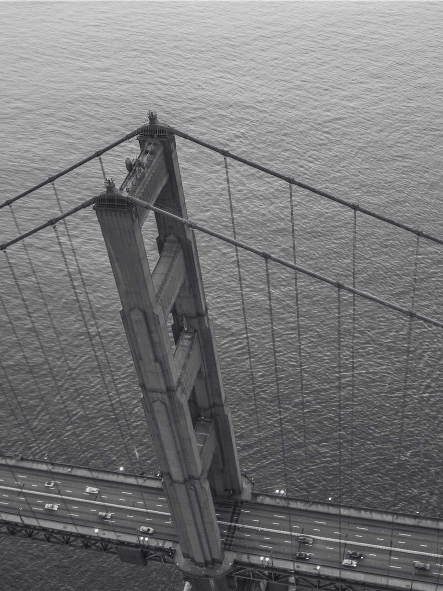

L'atelier est une pratique d'architecture installée à Bruxelles, dont les projets vont de la maison individuelle à l'équipement public, en passant par le paysage et la donnée territoriale. Le nom dit l'essentiel : un lieu où l'on fabrique ensemble, où le dessin, la maquette et le chantier avancent de front, et où l'autorité du projet est partagée entre ceux qui le font.
Le travail s'attache autant à la manière de construire qu'à ce qui est construit. Chaque projet est d'abord une lecture du sol, du climat et des usages en place ; il devient ensuite un système de matériaux et d'assemblages que l'on peut entretenir, réparer et transformer. Les intérieurs, les objets et les cartes participent de la même recherche.
Les projets sont développés par cycles courts, avec les habitants, les artisans et les ingénieurs, en passant du relevé au prototype puis au chantier. Cette méthode laisse le bâtiment répondre à ce qui change, tout en gardant une identité matérielle claire et volontaire.
L'atelier enseigne, écrit et expose sur la construction, le territoire et la culture matérielle.

Côme Le Bozec est étudiant en architecture à l'UCLouvain LOCI, à Bruxelles. Son travail explore la manière dont l'analyse cartographique et la donnée spatiale peuvent informer le projet, du détail constructif à l'échelle du paysage.
Il a travaillé sur des projets d'habitat collectif, d'équipements et d'analyse territoriale, et développe des outils de dessin et de calcul pour la conception paramétrique et la représentation du territoire.
bruxelles — rennes
sur rendez-vous
© 2026 côme le bozec.